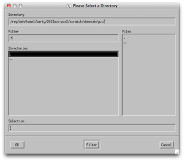

Getting started with Cheetah
At lcls
Cheetah is centrally installed on the LCLS servers at /reg/g/cfel/cheetah.
To access this version execute the setup script /reg/g/cfel/cheetah/cheetah-latest from your C shell (bash version also available):
[psanacs055:barty]~> source /reg/g/cfel/cheetah/setup.csh
Setting up Cheetah
Using /reg/g/cfel/cheetah/cheetah-latest
[psanacs055:barty]~>
Once executed, the Cheetah GUI can be started using the command
> cheetah-gui
[psanacs055:barty]~> cheetah-gui
IDL Version 8.0 (linux x86_64 m64). (c) 2010, ITT Visual Information Solutions
This starts the Cheetah GUI interface (which runs using the IDL virtual machine in runtime mode).
Instructions on how to set up Cheetah for your experiment are contained on the configuration page.
To browse data use any machine with access to your data in /reg/d/psdm/....
It is best to run from one of the psana nodes (as these have faster data access).
To run cheetah and submit batch jobs it is necessary to have access to both the data directories and the ‘bsub’ batch queue commands. This is most easily done by running on psexport (all calculations are sent to the batch queue, so this should not overload the one server).
At CFEL/DESY

Cheetah is controlled by a GUI front end which streamlines control of most common operations.
Follow the instructions below to access this at common experiment locations.
Cheetah is insstalled in /cfel/common.
> cheetah-gui should just work provided /cfel/common/bin is in your path.
More instructions to follow (or wander down the hall and ask).
Elsewhere
At any other location you will have to install Cheetah from scratch.
Installing Cheetah itself is not too hard; however installing the LCLS framework required to read XTC files directly can be an adventure. Your mileage may vary. Please see the developer pages for details on installing Cheetah from scratch.
Alternatively, if your data comes from somewhere other than LCLS, Cheetah can be called from code able to read any other file format: it is simply a matter of passing the frame data to Cheetah for processing. Once again, see the developer pages for more details.



What next?
It is possible to navigate directly to the data when someone else has already set up everything for your experiment.
Click the IDL virtual machine box to dismiss it.
(The Cheetah GUI uses the IDL virtual machine as an environment, which can be downloaded and used for free if you want to run the image browser at home.)
You should be presented with a list of all previous experiments in which the GUI has previously been used.
Either select one of the existing experiments, or use ‘Different Directory’ to navigate to the location of the cheetah/gui folder described above and click OK.
This should bring up the interface shown at the top of this page and should be sufficient to view an existing data set set up by someone else.
Instructions for setting up a new experiment from scratch can be found on the following page.